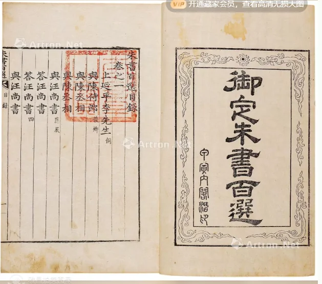

 点击图片可查看大图 · 原始图像 629×554 px 成交 御定朱书百选 六卷（朝鲜内府奎章阁藏） —— 成交记录RMB 23,000 估价无估价（无底价） 记录信息 拍卖日期2020-09-20 09:30 拍卖公司海王村 拍卖专场第八十八期大众收藏书刊资料文物拍卖会 第八十八期大众收藏书刊资料文物专场 创作年代原表未著录 开本开本巨阔 尺寸类型定性描述 高 × 宽未著录 纸张原表未著录 成交价原文RMB 23,000 来源位置Excel 第 14 行